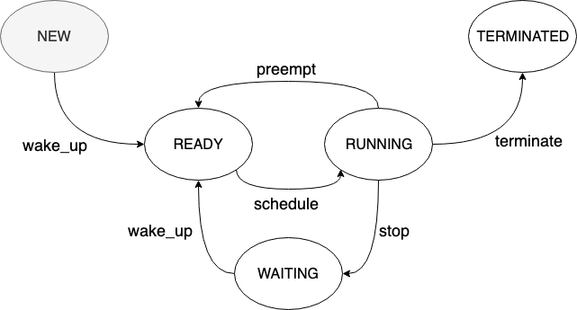

Typed State Machine
A library to describe finite state machine (aka DFAs).

tsm = await new TypedStateMachine({
// minimal setup: initial state and transitions
initialState: ThreadStateType.New,
transitions: [
new Transition({
from: ThreadStateType.New,
to: ThreadStateType.Ready,
name: "wake_up"
}),
new Transition({
from: ThreadStateType.Ready,
to: ThreadStateType.Running
name: "schedule"
}),
new Transition({
from: ThreadStateType.Running,
to: [
ThreadStateType.Ready,
ThreadStateType.Waiting,
ThreadStateType.Terminated
]
}),
new Transition({
from: ThreadStateType.Waiting,
to: ThreadStateType.Ready,
name: "wake_up",
//optional transition events
onBeforeTransition: (tsm) => console.log(tsm.getState()),
onAfterTransition: (tsm) => console.log(tsm.getState())
})
],
// general state events
onStateEnter: (tsm, state) => console.log(`Entered in state ${ThreadStateType[state]}`),
onStateLeave: (tsm, state) => console.log(`Left state ${ThreadStateType[state]}`),
// general transition events
onAfterEveryTransition: (tsm, from, to) => console.log(`After transition ${ThreadStateType[from]} -> ${ThreadStateType[to]}`),
onBeforeEveryTransition: (tsm, from, to) => console.log(`Before transition ${ThreadStateType[from]} -> ${ThreadStateType[to]}`),
// specific state async hooks
hooks: [
{
state: ThreadStateType.Running, // state for this hooks
handlers: [
{
hookType: StateHookType.OnBeforeEnter, // 4 possible values
handler: () => checkResources() // returns Promise<boolean>
}
]
}
]
}).initialize();Transit by name:
tsm.getState(); // ThreadStateType.New
await tsm.transitByName("wake_up") // ThreadStateType.Ready
await tsm.transitByName("schedule") // ThreadStateType.Running
await tsm.transitByName("stop") // ThreadStateType.Waiting
await tsm.transitByName("wake_up") // ThreadStateType.Ready
// ...
Note
Please note that this project is under active development and is not ready for use.
Roadmap
- Improve source code (refactoring)
- Find a better way to make sync and async hooks compatible
- Maybe divide function in version to keep strong types? Eg.
transit(): sync, throw error if it finds an async hook in the current resolutionawait transitAsync()// ok for both sync and async hookstransitByName()await transitByNameAsync()goto()await gotoAsync()
- Maybe divide function in version to keep strong types? Eg.
- Refactor
HookFunction<T>to something more significant -
Consider removenew Transition({})in favour of{}like other options - Add other utility methods:
tsm.bindHook(StateType.A, (hookType: StateHookType) => { if(hookType == StateHookType.OnBeforeLeave){ // ... } }); - Transit by name (with context-awareness)
tsm.transit("transitionName") - Add options to ignore hooks and events
tsm.transit(MyState.NewState, invokeLifecycles: bool) - Keep track of previous states
tsm.back(); tsm.forward(); - Add more information in fired events
transition.onBeforeTransition(tsm: TypedStateMachine, from: T, to: T); transition.onAfterTransition(tsm: TypedStateMachine, from: T, to: T);
- Find a better way to make sync and async hooks compatible
- Improve unit test organization
Add support to decorate an enum with reflect-metadata
enum StateType { @Transition({ to: [ StateType.Inactive, StateType.Paused ] }) Active, @Transition({ ... }) Paused, @Transition({ ... }) Inactive, @Transition({ ... }) Stopped } const tsm = new TypedStateMachine(StateType); tsm.bindHook(StateType.A, (hookType: StateHookType) => { if(hookType == StateHookType.OnBeforeLeave){ // ... } });- Add pluggable modules
- History
- Visualization
- ...